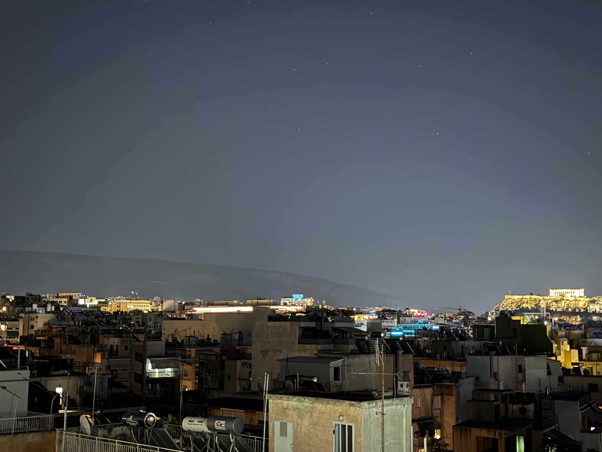
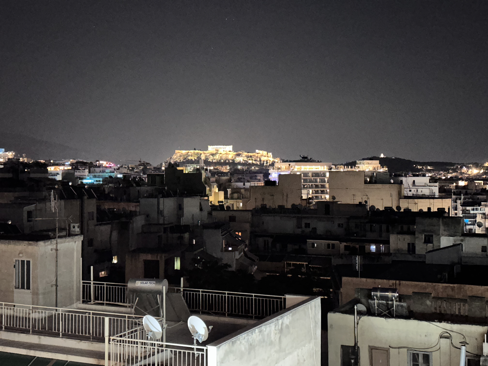
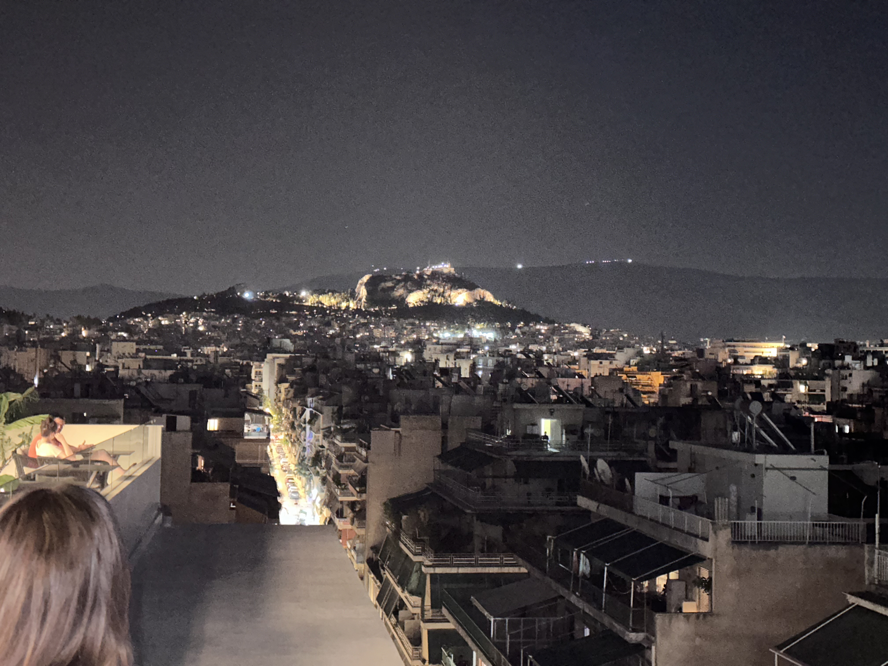

La ciudad desde el hotel
Orientación del paisaje, identificación de la Acrópolis y el Licabeto, y primera impresión de la metrópoli.
Una primera lectura de Atenas desde el paisaje: la cuenca, sus colinas, la Acrópolis y la ciudad moderna extendida bajo el cielo del Ática.
Desde el hotel, Atenas se presenta como una vasta extensión mineral y luminosa. No es una ciudad que se entregue de inmediato: primero se reconoce por sus elevaciones, después por sus monumentos y solo más tarde por la complejidad de su historia.
La Acrópolis concentra la mirada, pero el paisaje completo explica mejor la ciudad. El Licabeto, las montañas del Ática y la llanura urbanizada convierten el horizonte en una introducción geográfica a la historia ateniense.

La historia de Atenas no se contempla únicamente en sus ruinas: también se lee en la forma de su horizonte.
La primera serie fotográfica del viaje no busca documentar monumentos de cerca, sino fijar la posición que ocupan en el paisaje ateniense. La distancia revela su función: ordenar visualmente una metrópoli inmensa.


La llanura ateniense está rodeada por el Himeto, el Pentélico, el Parnés y el Egaleo. Esta geografía protegió, limitó y orientó el crecimiento urbano. En su interior, colinas como la Acrópolis, el Areópago, la Pnyx y el Licabeto actuaron como referencias religiosas, políticas, defensivas y visuales.
La piedra que dio forma a la ciudad también procede de este territorio. El mármol pentélico, blanco y levemente dorado bajo la luz, se convirtió en la materia simbólica de la Atenas clásica.
Orientación del paisaje, identificación de la Acrópolis y el Licabeto, y primera impresión de la metrópoli.
Historia de la roca, programa de Pericles, Partenón, Erecteion, Propileos y Atenea Niké.
El espacio cívico, las instituciones, la vida cotidiana y las contradicciones de la democracia ateniense.
Escultura, policromía, restauración, expolio y reconstrucción contemporánea del mundo clásico.